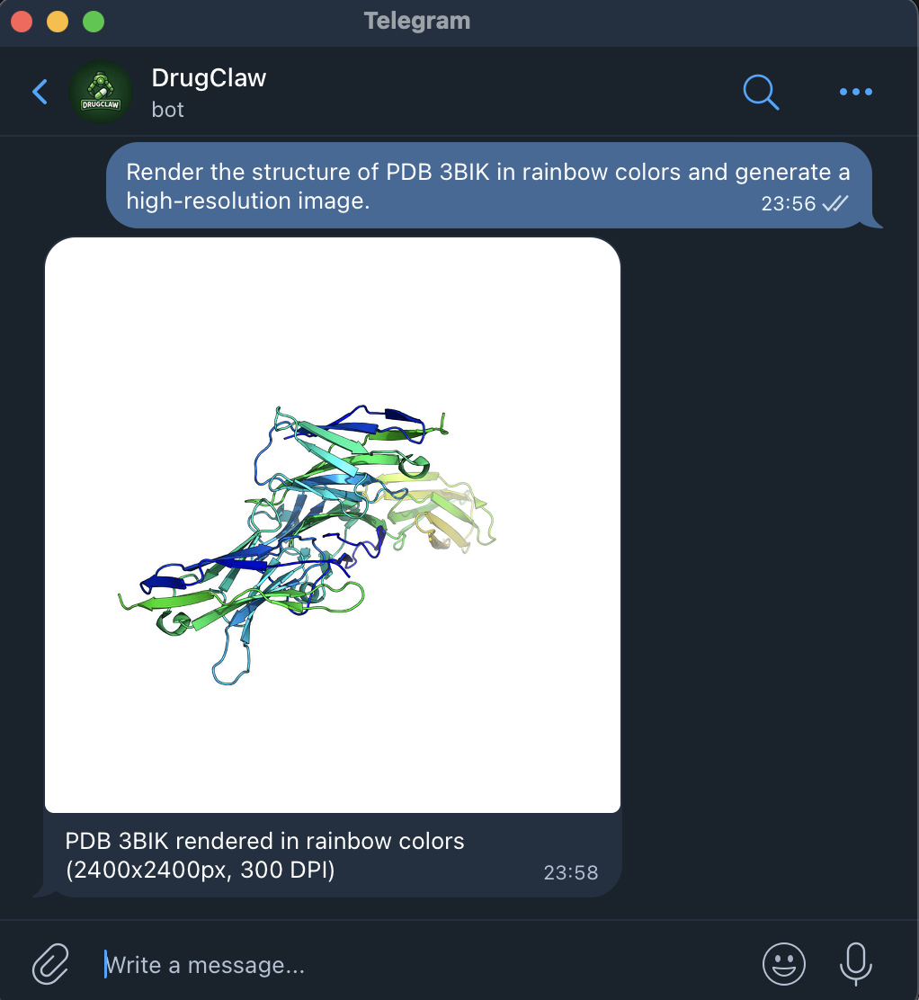
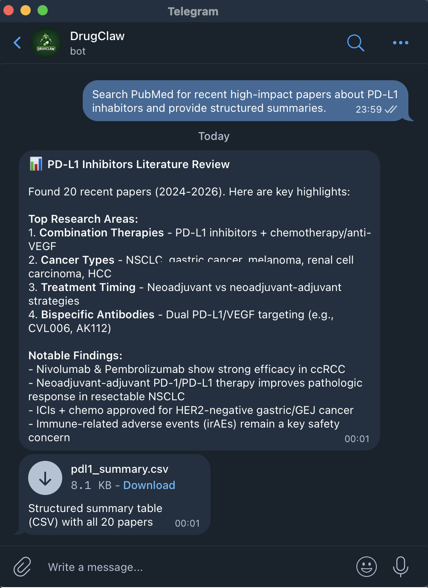
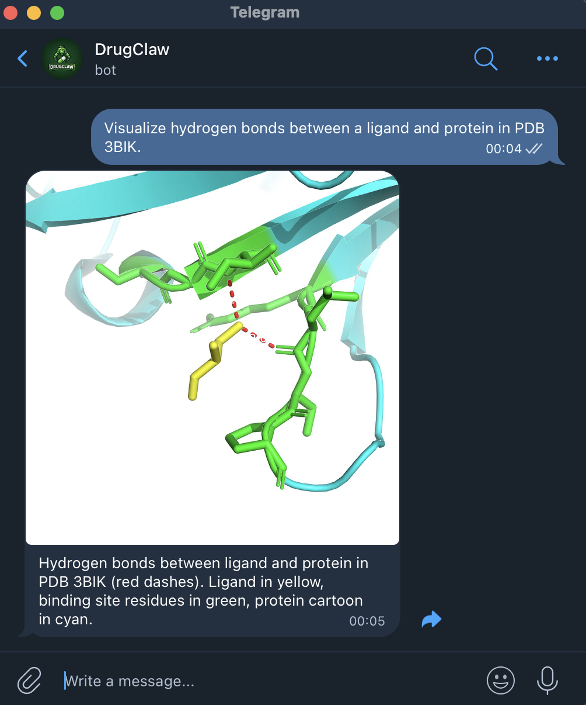
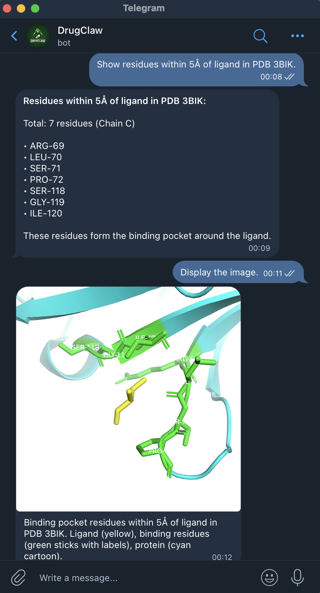
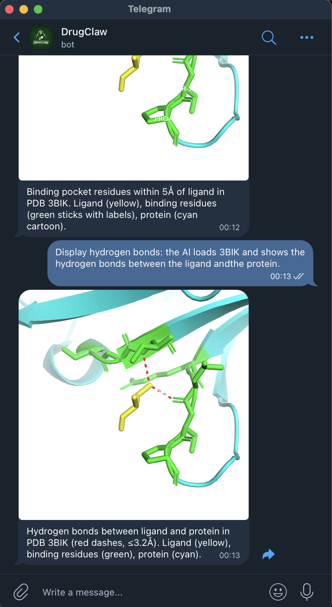
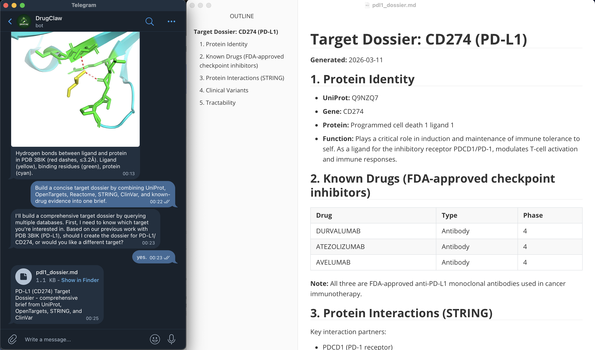
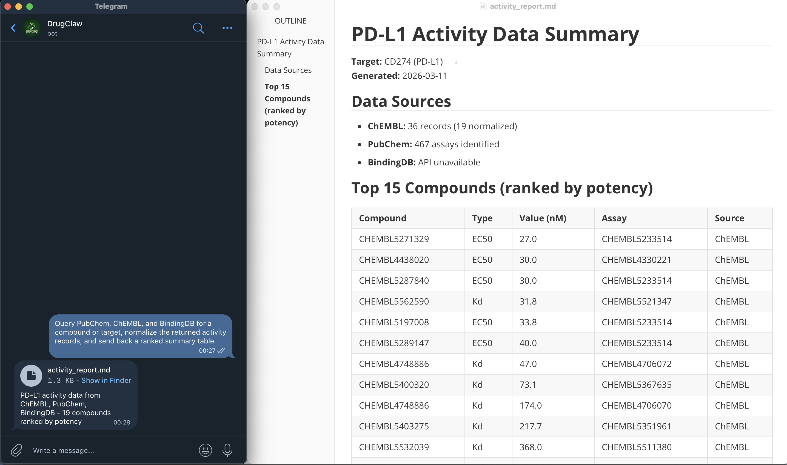
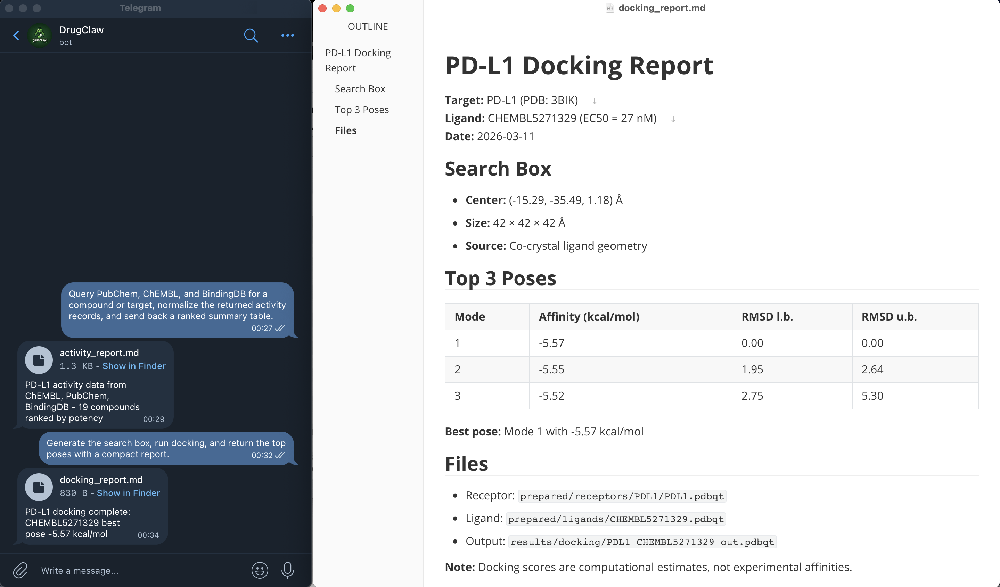

cp drugclaw.config.example.yaml drugclaw.config.yaml
drugclaw setup
drugclaw doctor
drugclaw startcurl -fsSL https://drugclaw.com/install.sh | bashiwr https://drugclaw.com/install.ps1 -UseBasicParsing | iexgit clone https://github.com/DrugClaw/DrugClaw.git
cd drugclaw
cargo build
npm --prefix web install
npm --prefix web run buildWeb UI: http://127.0.0.1:10961
Optional:
docker build -f docker/drug-sandbox.Dockerfile -t drugclaw-drug-sandbox:latest .






